逻辑回归
逻辑回归（Logistic Regression，简称LR） 虽然被称为回归，但其实际上是分类模型，并常用于二分类。Logistic Regression 因其简单、可并行化、可解释强深受工业界喜爱。
Logistic 回归的本质是：假设数据服从这个分布，然后使用极大似然估计做参数的估计。
线性回归
假设我们用回归的方法去解决分类问题。考虑下面简单一维情况下的二分类，x轴为肿瘤大小，y轴为是否为恶性肿瘤标签（也可以认为是概率）。我们先通过回归方法得到一条拟合直线，用于描述人体内肿瘤大小与恶性肿瘤发生概率的关系，然后人为设定一个阈值，例如0.5，当预测出来的y>0.5时我们认为标签为1，否则为0。即通过设定阈值，可以将回归问题转化为分类问题。
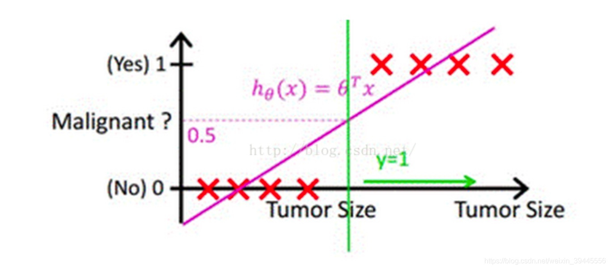
在上图中，绿色线右侧即为恶性肿瘤标签判定为1的区域。
假如现在出现了一个超大肿瘤的样本（即下图最右侧的样本），此时会得到一条新的直线如下图。此时若阈值仍为0.5，那么就会有两个样本点被划分错误（下图标注wrong的部分）。
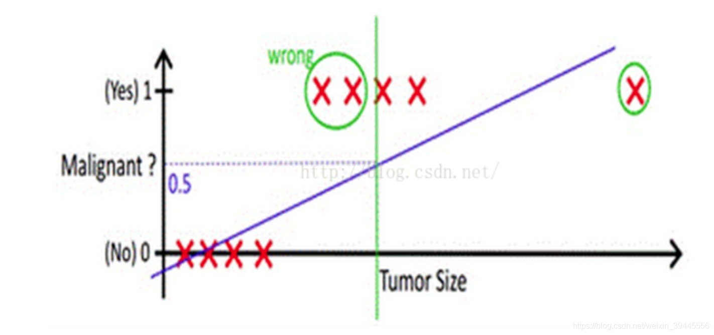
从上边的例子可以看出，使用线性函数拟合的问题在于：离群值（也叫异常值）对结果的影响过大。为了解决这个问题，下面我们将会做两件事：
1.找到一个办法解决掉回归的函数严重受离群值影响的办法
2.选定一个阈值
逻辑回归
为了解决线性函数“过直”的硬伤问题，我们将其转换为非线性函数，这里选用有众多优秀性质的sigmod函数。
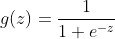
其中，e为欧拉常数，z就是我们熟悉的多元线性回归中的。sigmoid函数的图像如下，它是S型曲线，定义域(-Inf,Inf)，值域(0,1)，可求导。
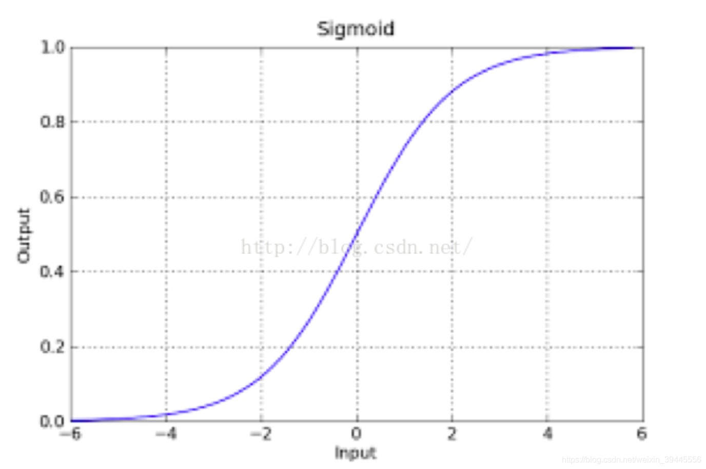
该函数具有很强的鲁棒性，并将函数的输入范围(∞,-∞)映射到了(0,1)，具有概率意义。
有了这样一条曲线之后，我们要了解这个曲线可以预测正确的概率是多少？
预测为负例的概率：P(y=0|w,x) = 1 – g(z)
预测为正例的概率：P(y=1|w,x) = g(z)
- 上面的表达式合并为：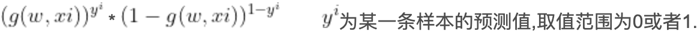
损失函数
现在我们的目标为找到一组w，使所有样本以下列函数作为分类曲线的预测正确概率最大：
若对所有样本预测正确概率最大，所有样本预测正确的概率相乘得到的P（总体正确）最大。在上面的推理过程中，我们已知每个样本预测正确概率的公式为：
那么对于所有样本，预测正确概率（似然函数）为：
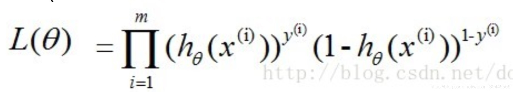
由于连乘的函数不好计算，我们可通过两边取log的形式（对数似然函数）让其变成连加：
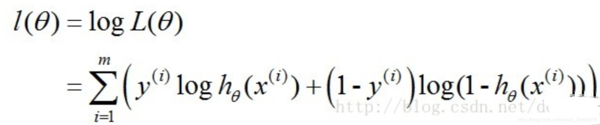
得到的这个函数越大，证明我们得到的W就越好。由于在函数优化时通常求最小值，因此我们人为增加一个负号。终于，这个函数就是我们逻辑回归（Logistics regression）的损失函数，我们叫它交叉熵损失函数。我们的目标为：找到一组w使下式最小。
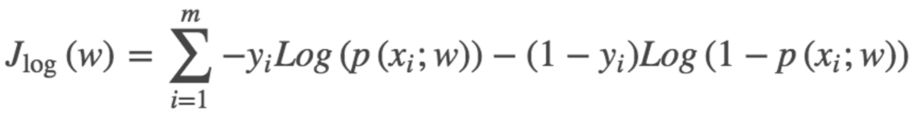
人为增加一个1/m后（为了求解时抵消m），最终变为以下形式：
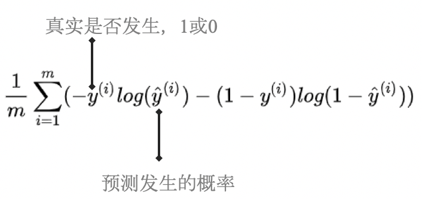
求解方法——梯度下降
由于梯度下降需要计算目标函数的斜率，因此在这里我们需要计算下式中斜率
梯度下降的原理可参见《线性回归》，这里不再赘述
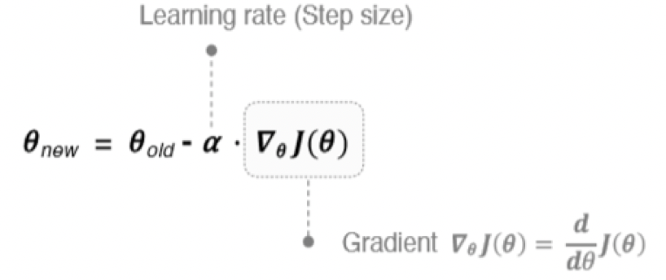
斜率计算方法为：
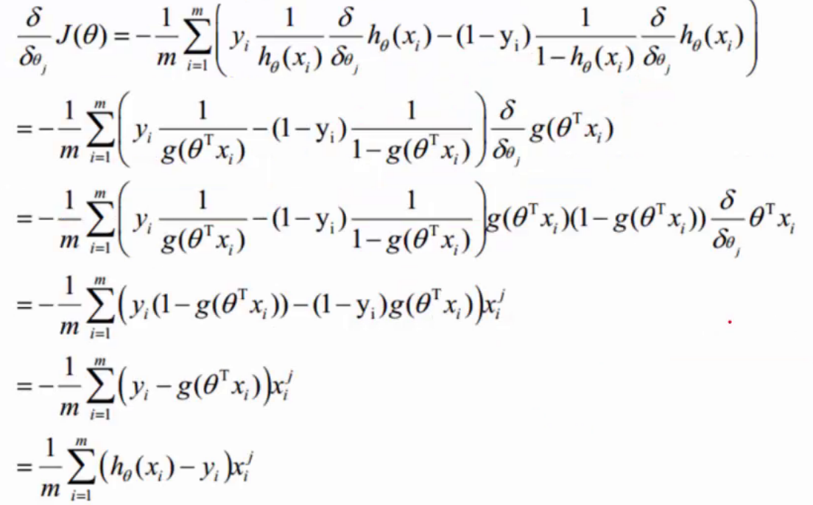
最终我们得到：
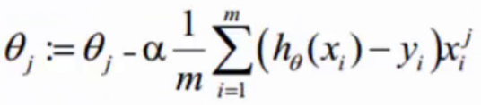
阈值选定
我们已经知道了sigmod函数预测结果为一个0到1之间的小数，判定是否正类或负类的阈值是由人为选定的。选定阈值的第一反应大多都是选0.5名，其实实际工作中并不一定是0.5，阈值的设定是根据实际情况来判断的。
在开头的案例中，我们也可以直观地了解，为什么阈值不一定是0.5。事实上，无论如何设定误差都是存在的，所以我们选定阈值就是选择可以接受误差的程度。
通常情况下，我们需要结合业务来看。例如开头的案例，选定阈值为0.5意味着如果一个患者得恶性肿瘤的概率为0.49，模型依旧认为他没有患恶性肿瘤，结果可能会造成严重的医疗事故。因此针对这类问题，我们可人为将阈值设置的小一些，例如当一个人患恶性肿瘤的概率超过0.3时我们的算法就会报警，让这个人去做一个全面检查，比起医疗事故来讲，显然这个更容易接受。
代码
这里我们使用了sklearn自带的鸢尾花数据集。
sklearn datasets参考：https://scikit-learn.org/stable/modules/classes.html#module-sklearn.datasets
相关包引入
1 | import numpy as np |
数据集
1 | dataX=datasets.load_iris()['data'][0:100] |
核心逻辑
1 | # sigmoid函数 |
画图
1 | fig, ax1 = plt.subplots() |
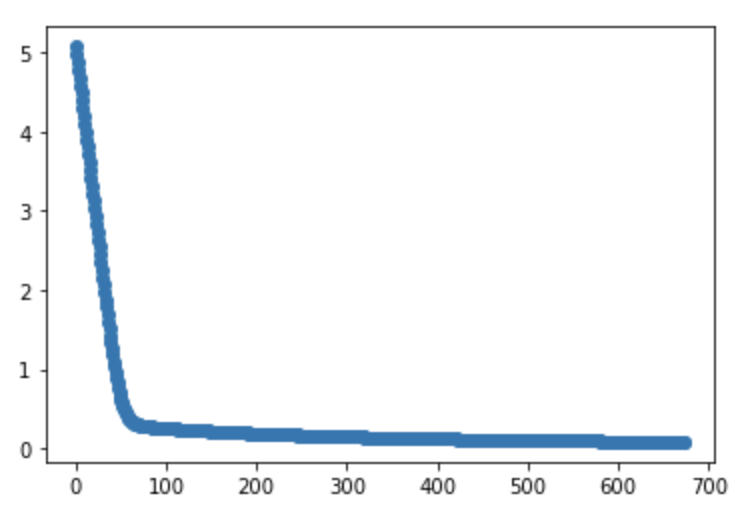
参考文档
https://zhuanlan.zhihu.com/p/74874291
https://blog.csdn.net/weixin_39445556/article/details/83930186